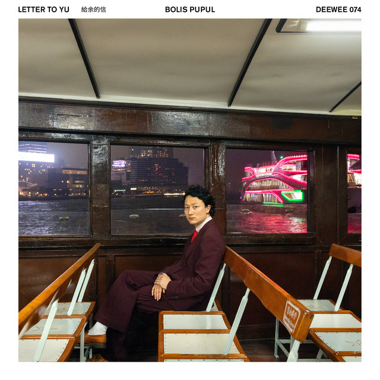

Bolis Pupul - Letter to Yu



Información del álbum facilitada por discogs.com:
Fecha de lanzamiento: 2024
Géneros: Electronic
Estilos: House, Techno
Pais: Czechoslovakia
Votos: Media de 4.0 con 6 votos
Sello: Supraphon
Phonographic Copyright (p): Supraphon
Pressed By: Gramofonové Závody
Pressed By: Gramofonové Závody
Arranged By - Jiří Schmutz
Arranged By - Miloslav Benýšek
Arranged By - Petr Michalík
Art Direction [Cover Editor] - Vlastimila Vávrová
Design [Cover] - Miroslav Jiránek
Drums, Percussion - Radim Pařízek
Drums, Percussion [Uncredited] - Jaroslav Ožana
Electric Guitar, Acoustic Guitar - Jiří Schmutz
Electric Guitar, Acoustic Guitar, Slide Guitar - Miloslav Benýšek
Engineer - Karel Šmiták
Leader, Bass Guitar - Petr Michalík
Liner Notes [Sleeve-note] - František Horáček
Photography By [Back Cover] - Jiří Antalovský
Producer - Milan Zbavitel
Recording Supervisor [Recording Director] - Jiří Pospíšil (2)
Supervised By [Editor] - Sláva Kunst
Vocals, Percussion - Vladimír Kubala
Tracklist:
Letter To Yu 3:02
Completely Half 4:20
Goodnight Mr Yi 3:17
Frogs 4:35
Doctor Says 4:02
Spicy Crab 4:46
Ma Tau Wai Road (feat. Sarah Yu Zeebroek) 4:00
Causeway Bae 3:55
Cantonese 4:53
Kowloon 5:24
Cosmic Rendez-Vous 3:46